Kenali pola energi.
Pemeriksaan kondisi bangunan, perangkat, dan tagihan untuk memahami penggunaan listrik serta peluang perbaikan.
Audit & baselineBantu kos lu bekerja lebih efisien. Temukan pemborosan listrik, pilih perbaikan yang tepat, dan pantau hasilnya dalam satu layanan.
Dirancang untuk kos ber-AC dengan listrik termasuk biaya sewa.

Setiap properti punya kebutuhan berbeda. EcoRetro menghubungkan pemeriksaan, perbaikan, dan evaluasi dalam satu alur.
Pemeriksaan kondisi bangunan, perangkat, dan tagihan untuk memahami penggunaan listrik serta peluang perbaikan.
Audit & baselinePilih tindakan sesuai kondisi dan anggaran: servis AC, peneduhan, atau penyesuaian operasional berdasarkan pemeriksaan.
Rencana & implementasiPantau konsumsi dan evaluasi perubahan dengan mempertimbangkan okupansi, cuaca, serta kenyamanan penghuni.
Monitoring & evaluasiDashboard yang membantu pemilik memahami apa yang terjadi di propertinya dan menentukan langkah berikutnya.
Kenali kebutuhan, pola pembayaran listrik, kondisi perangkat, dan anggaran yang tersedia.
Hasil pemeriksaan menjadi dasar rekomendasi, estimasi biaya, dan perkiraan manfaat untuk dipertimbangkan.
Laksanakan pekerjaan yang disepakati, pantau perubahan, lalu tentukan tindak lanjut berdasarkan hasilnya.
Fokus awal EcoRetro adalah kos ber-AC dengan listrik termasuk biaya sewa, sehingga manfaat efisiensi langsung relevan bagi pemilik.
Pemilik / pengelola properti
Area awal yang direncanakan: Bandung
Tidak selalu. Lingkup pekerjaan mengikuti hasil pemeriksaan. Langkah awal bisa berupa perawatan perangkat atau perubahan operasional, sebelum mempertimbangkan intervensi yang lebih besar.
Belum bisa ditentukan sebelum pemeriksaan. Potensi penghematan bergantung pada kondisi awal, tindakan yang dipilih, pola penggunaan, serta cuaca dan okupansi.
Rancangan layanan terdiri dari biaya pemeriksaan, paket perangkat dan pemasangan sesuai kebutuhan, serta langganan monitoring. Harga dan lingkup pekerjaan ditentukan melalui penawaran.
EcoRetro dirancang sebagai layanan pemeriksaan dan perbaikan properti dengan dashboard web sebagai alat pemantauan. Pekerjaan lapangan dan evaluasi menjadi bagian dari alurnya.
Kenali peluang perbaikan sebelum memutuskan investasi berikutnya untuk kos lu.